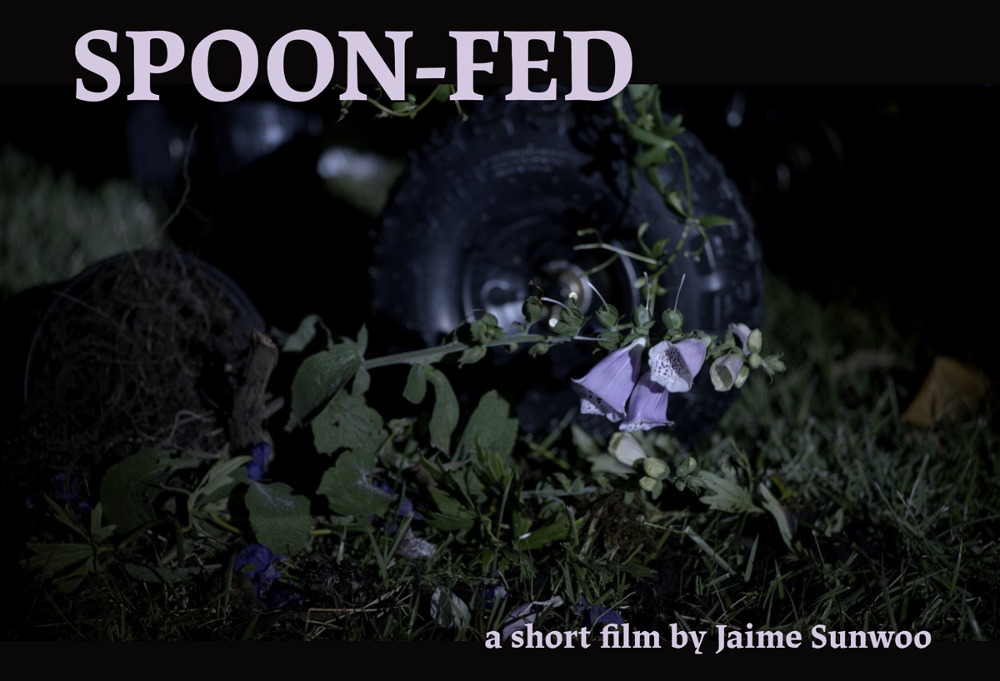

A homeschooled girl and her scientist father scramble to maintain order when a human experiment they care for claims to have witnessed hidden horrors.
In the basement of a secluded household, homeschooled EVA and her ailing scientist father EUGENE secretly care for human experiments rescued from Eugene's employer Omnia, a privately funded gene tech company running illicit labs that skirt ethical regulations. The rescues – kindhearted fishlike SHUI, rebellious reptilian OWEN, and curious hermit crab-like critter CRABBY – pass time by watching nature programs, playing with toys, and bantering while Eva and Eugene tend to their medical needs including Shui's breathing problems and Owen's painful skin condition. Their lives are largely uneventful until a visit from Eugene's old colleague DR. YANG spirals into chaos.
CAST
- EVA Zoya Bogomolova
- DR. EUGENE GRANT Paul Anthony Stewart
- SHUI Michael C. Liu
- OWEN Wilson Aldas
- DR. SHENG YANG Wes Chum
- CRABBY Alva Rogers
- CHINESE SCIENTIST Matheus Ting
- BRITISH SCIENTIST Rivers Duggan
- FROG MAN Joshua William Gelb
- PUPPETEER Andy Manjuck
CREW
- Writer / Director Jaime Sunwoo
- Producer Candice Kuwahara
- Producer Mo Faramawy
- Cinematographer / VFX Editor Zach Stoltzfus
- Production Designer Julia Torres
- Assistant Director Kayla Wong
- Casting Director Michael D'Amato
- Key Makeup Artist Beatrice Sniper
- Makeup Artist Craig Lindberg
- Costume Designer Hannah Kittell
- Sound Mixer Hyo Jin An
- Puppetry Consultant Andy Manjuck
- Makeup Assistant Lorena Garcia
- Gaffer Blaine Chou
- Key Grip Timothy McLoone
- On Set Props Noah Duarte
- First Assistant Camera Annie Mara
- Second Assistant Camera Simone Durando
- Production Assistant Aoife Hough
- Production Assistant Harrison Gambelli
- Composer Gideon Broshy
- Colorist Tam Le
- Science Consultant Hussein Mohsen
For additional materials on the project, please contact Jaime Sunwoo at sunwooprojects@gmail.com
<< Back
{kind=link}
{kind=link}
{kind=link}
{kind=link}
{kind=link}
{kind=link}
{kind=link}
{kind=link}
{kind=link}